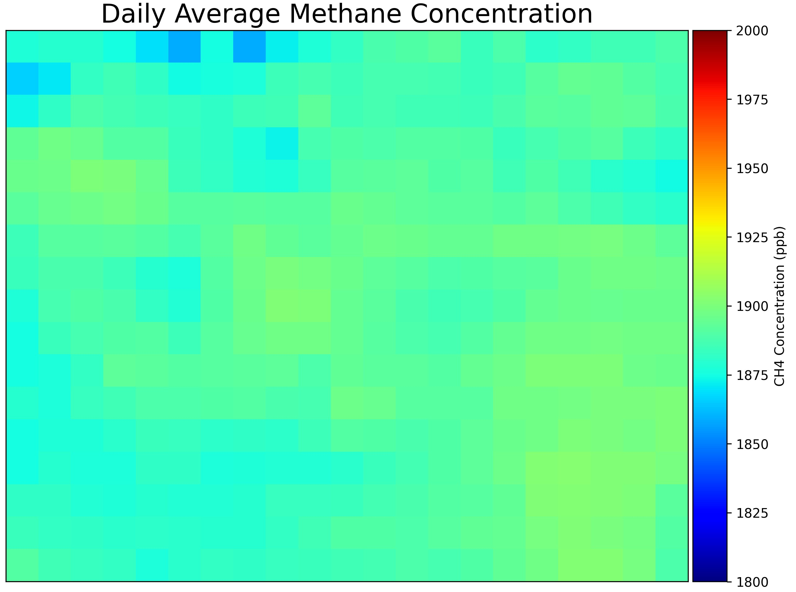
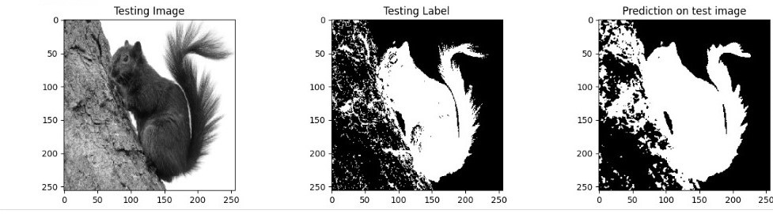
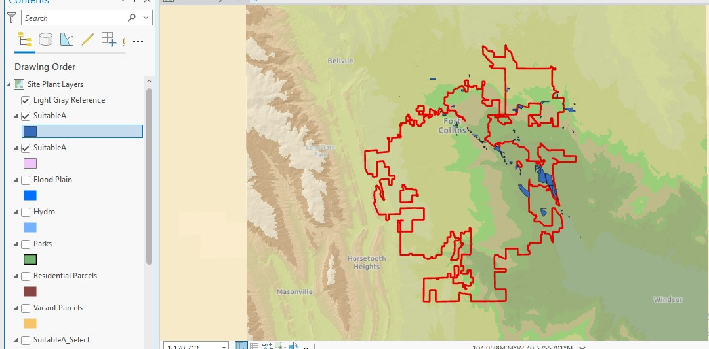
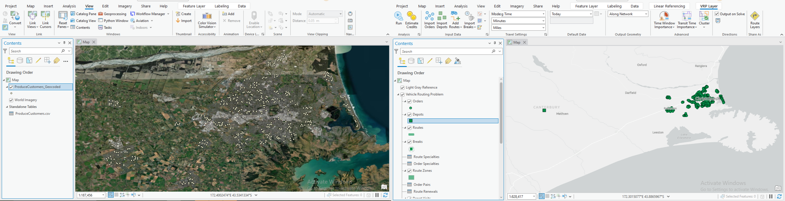

Environmental & Geospatial Data Analyst | GIS • Remote Sensing • Machine Learning
Passionate Environmental & Geospatial Data Analyst with experience in GIS, remote sensing, and machine learning. Transforming complex data into actionable insights for environment, technology, and sustainable development.
Open to opportunities and collaborations in geospatial and environmental analysis, remote sensing, and GIS.

Analyzed spatial and temporal methane concentration trends in Ottawa using Sentinel-5P satellite data, identifying peak emission months.
Read More
Developed a U-Net deep learning model to perform binary image segmentation on squirrel images, accurately distinguishing black and brown variant.
Read More
Automated site selection for a wastewater treatment plant using ArcGIS Pro ModelBuilder by applying multiple spatial criteria, including proximity to rivers, city limits, and exclusion zones.
Read More
Used ArcGIS Pro to optimize delivery routes for emission reduction, applying network analysis and VRP tools to improve efficiency and minimize environmental impact.
Read MoreDeveloped Python scripts using machine learning algorithms to classify images of wildlife,achieving 86% accuracy.
Taught geography and environmental science courses; guided students in GIS projects.
Learned GIS, Remote Sensing, Spatial Analysis, and Environmental Data Modeling.
Studied Environmental Assessment, Water Quality Analysis, and Ecosystem Management.
Spatial analysis of groundwater– Environmental Monitoring(under review)
Remote Sensing-based Land Cover Classification – Google Earth Engine(In preparation)
Other Environmental Research: Conducted research on wastewater management and water quality monitoring. View on Google Scholar. (Not directly related to GIS or remote sensing)
Esri Academy, LinkedIn Learning & DataCamp | 2023–present
Completed extensive training in GIS and remote sensing, with focus on: Spatial Analysis (ArcGIS Pro, QGIS), ArcGIS Online, Remote Sensing & Imagery Analysis, Python for Geospatial Applications.